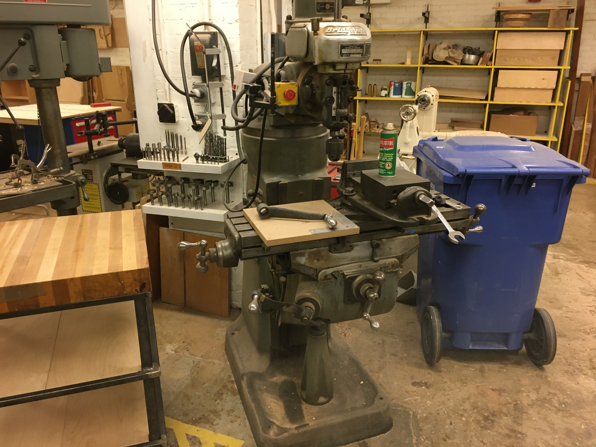

The Bridgeport milling machine in the wood shop area is just used for wood. Don't use the milling cutters from the metal shop. Instead use the router bits that can be found in the cabinet next to the router table . 